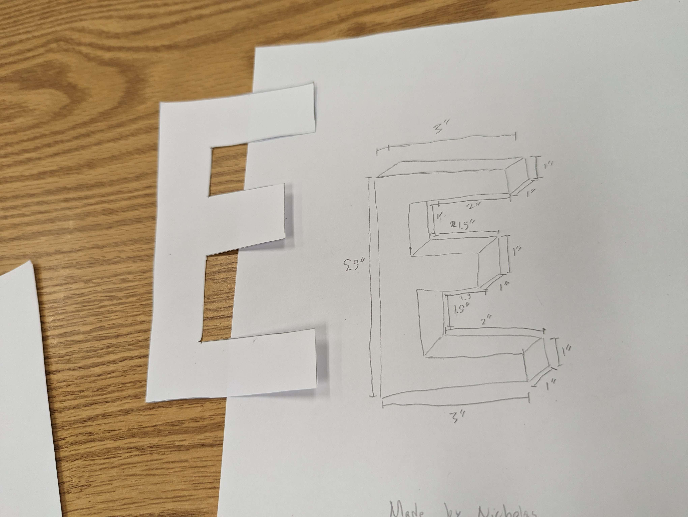

9/1/23 - This is my first journal entry!
1. Write what engineering discipline you learned about this week!
I Learned that we need to always wear your Safety Glasses when working with thigns that could break and fly.
2. What challenge/project did you do? What have you started designing and how?
We did a marble challenge where we had to make a marble travle down a line of pvc pipes but had to give the next person the pipe because we didnt have enough for everybody. We started working on a project where we have to start with a baseball and eventually get it to pop a balloon with a pin, we have to use pulleys ramps, levers, and etc.
3. Write about your Challenge this week!
We had a challenge were we had to use a website tinkercad we had to build a home appliance and who ever made the best looking object won.


9/8/2023 - This is my second journal entry
1. Write about how your week went
My week went good and pretty smooth and it was a pretty fun week because of Engineering.
2. Write about what you learned this week
I learned how to use a website called tinkercad to create stuff with it and make diagrams of projects that we will do.
.png)

3. Write what your rube goldberg machine will do and what machines you're using
Our GoldBerg machine consists of a pully, incline plane, and a lever to get a baseball to eventually pop a balloon with a needle.
4. Write what you think will be the most challenging part
I believe that the most defficult part of this challenge will be getting the needle to go fast enough and the right speed to pop the ballon at the end.
9/22/2023
1. My week went decent. We had some challenges and my team and I pretty much failed all of them. First we had to make the Goldberg Machine and everything pretty much worked 95% of the time but our pully woudln't work so we techniquely failed that challenge. We did a smaller group challenge where we got a piece of paper and had to make sometime of boat that holds weight up in a bucket of water for 5 minutes. My teammate and I made a actual paper boat but it only lasted 9 seconds in the bucket because we needed to distrupute the weight better than we did and it would have worked better. The last challenged we did was was we had to draw a E with perfect measurements for every side, then we had to give the outline to someone else and they had to make a E with out demensions. Mine didnt really work out because I forgot to put some of the measurements down.
My E I made with someone elses dimensions:

2. Our GoldBerg Machine worked for most but our pulley and the needle were the problems. The pulley wither would hit the balloon or the needle would miss or not even pop. It would have been better if we would have reconfigured the pulley system but other than that it was pretty good.
3. I think I contributed a lot into the challenge like maked it on tiner cad, measuring, cutting, and acuatlly making it.
4. The E I made from some one elses drawing was really good and was almost perfect. But mine wasnt so good because I missed a few measurments. Our boat was a good idea but didnt play out good.
5. We learned a lot about computer engineering like what it ia and how it is used. How the computers cpus work with tthe development of them. It did intrest me and I have helped build my own personal computer at home so I do know a little bit about it.
10/13/23
1. This week we are starting to learn about Aerospace Engineering and how it works with spaceships, what happens to them when they try to leave Earth or how they land one without crashing it.
2. There are 4 forces pulling on a rocket/spaceship when they are flying, the weight of the entire thing pullying it down, Thrust to make it go, lift to keep it into the air, and Drag from the Air Craft moving through the airslowing it down.

Our BOM List
3. One thing that I have liked about this class is that we build things. I have always liked building things and I like having to think hard about something but not having to use actual school things like deep and heavy math and other things like that.
10/20/23
1. We learned this week about Aerospace Engineering, we learned about what it takes for a rocket or ship to take off what forces effect the ship when it is in the air. What the peopl eon board the space station do and a little of how they live up there. What things are called that only go inside Earths atmosphere like planes, most rockets, and sattelites. Also what goes outside like space ships and the Space Station
2. Our design for our rocket was based off just a normal rocket. We put a cone on the top of it then put a set of 3 wings at the bottom and 2 set of wings at the top. We did run our rocket 3 different times, first time it barely went off the ground, second time it went into the air and spun, and the last time we sent it went super high and curved.